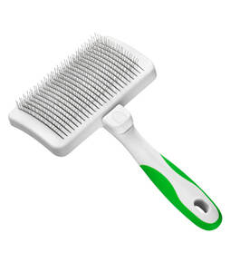
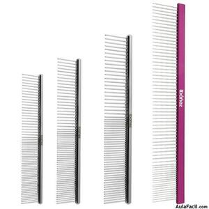
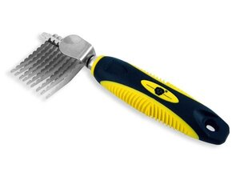
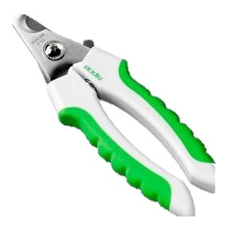
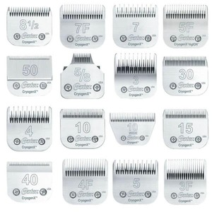

- Desinfectante yodo.
- Alcohol boricado-alcohol fino-agua oxigenada.
- Solución fisiológica.
- Cicatrizante tipo cura bicheras.
- Cicatrizante en polvo.
- Solución de limpieza para oídos.
- Cicatrizante cauterizador.
- Antiséptico en solución para ambientes y herramientas.
- Solución de higiene bucal.
- Crema de ordeñe.
- Guantes descartables algodón-gasa-cinta adhesiva.
Herramientas para el mantenimiento del manto
- Cardinas tipo neumáticas: tienen distintas medidas; chica, mediana y grande. Su función es eliminar lana y pelo muerto. Es ideal para todo tipo de mantos deteriorados y para la accción de secado.Es la herramienta mas utilizada en la peluquería. 
- Cepillo de cerda dura: sus cerdas sintéticas o de pelo natural se adaptan al lustrado en razas de pelo corto.
- Cepillo metálico: reemplaza la labor de la cardina en razas de pelo muy largo, ya que no quiebra la fibra capilar.
- Peines: hay de distintas medidas de dientes, sin mango. Es ideal para modelar acompañando el recorte, en cejas, cortinas, barbas, o tubos. 
- Peines para desenredar: se complementan en la tarea de desanunado junto al sacanudos y la cardina. Muy prácticos para la remoción de nudos pequeños en barbas, caras, y orejas. Son peines metalicos de dientes finos.
- Sacanudos: peine con filo. Removedor de lana y nudos. Ideal para todo tipo de manto con nudos localizados. 
- Alicate: pueden encontrase dos medidas, en caso de que sean uñas duras o calcificadas es conveniente usar el grande. Para uñas pequeñas o quintos dedos es mas preciso el alicate pequeño. 
- Tijeras:
- Tijeras de punta recta. Son las mas utilizadas para el uso general del trabajo.
- Tijeras de entresacar. Tienen una doble oja dentada. Se utilizan para sacar volumen al pelo y dismunir lineas de corte.
- Tijeras de pulir. Solo una hoja dentada. Se utilizan para sacar pelo, o disminuir la expresion del corte.
- Maquina de corte: Las maquinas utilizadas para la peluquería son especiales para ese fin, por la velocidad del motor y su resistencia en el uso prolongado.
- Cuchillas: Las cuchillas varían en la distancia entre dientes dando así distintos largos en el corte del manto. 
- Elemento de secado: Hay dos tipos de secado: el escurrido y el secado y modelado. Para el escurrido es necesario contar con una turbina. Éstas por su alta potencia cumplen un papel fundamental a la hora de escurrir y eliminar grandes cantidades de agua.
- Mesa de trabajo: Las mesas de corte pueden ser plegables o fijas, lo mas recomendable es que esten en el centro del salón para poder observar el perro y tener movilidad completa al rededor de la misma. No se trabajará en una mesa de corte que no cuente con sujetadores o cogoteros, que aseguren la ubicación del perro.